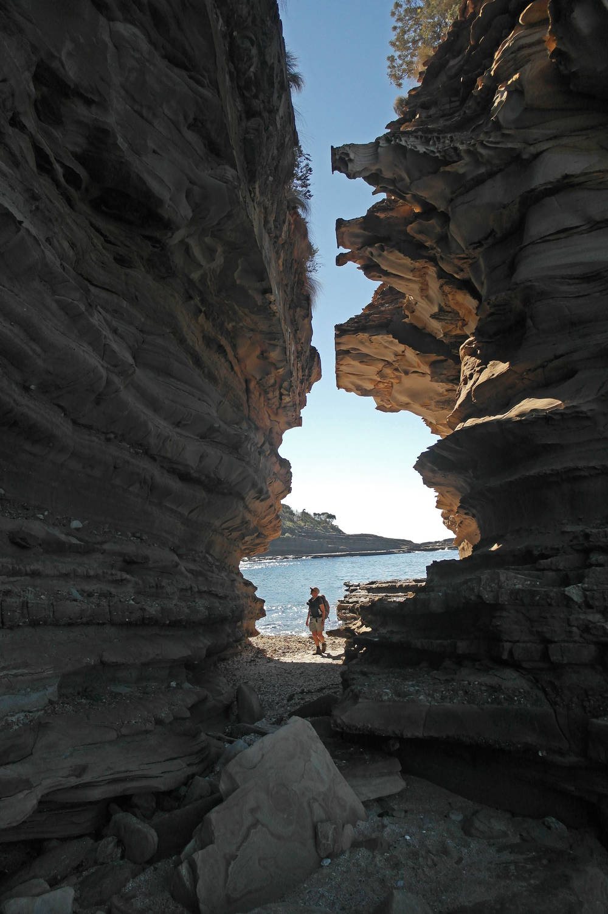
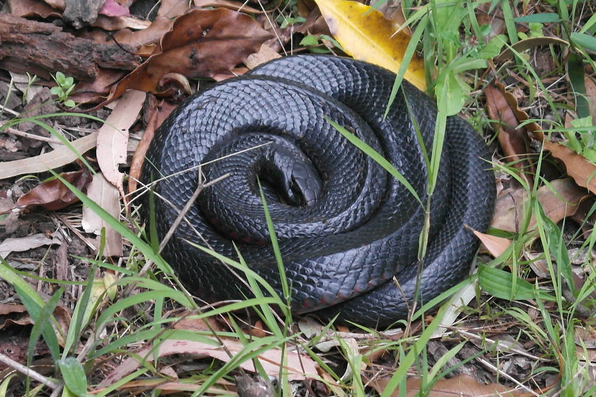
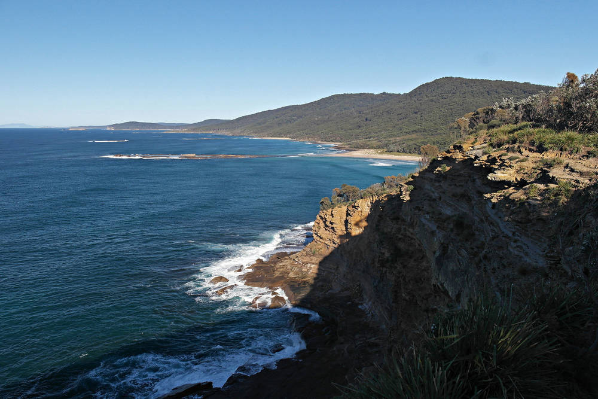

Wishing You a Very Merry Non-Denominational Christmas
And with the completion of another lap around our star, it is time to reflect upon the past year and reconnect with family and friends.
For the first year in four, we had no significant Australian travels. Late last year, as always, we had extensive and detailed plans for the coming year, and also as always, those plans were abandoned shortly thereafter. To date, our favourite all-round Aussie location is the NSW south coast, around 150-200 km south of Sydney – it ticks all the boxes: beautiful warm water coastline, temperate climate, away from the city, with easy access to sea kayaking, bush walking, and rock climbing. So when a year-long house-sit came available in this area, it was too tempting to pass up. In the middle of February we moved into a lovely rural home just south of the small town of Moruya on the NSW south coast.
If last year's Xmas letter was brought to you by the letter T, this year's letter comes care of the letter P for paddling. The sea kayaking 'round these parts is fantastic, and early on in our stay here, we were lucky enough to get hooked up with a great group of local paddlers, who let us tag along on their trips despite our lack of skill, experience, strength, or any other redeeming characteristics.
Under the tutelage of some very experienced paddlers, we have been testing our limits on the ocean, and steadily increasing our skills and confidence. We both love a challenge, and sea kayaking is proving fertile ground for finding challenges and opportunities to work on our fear management.
We have had many, many wonderful days on the water with our new tribe, exploring the rocky headlands, caves, and islands of this section of coast. We have often paddled with seals, rays, sharks, humpback whales, loads of birds, and landed on many beautiful secluded beaches – sometimes even managing to stay upright landing in the surf. We have now paddled a 135km section of the coast (north of Ulladulla to south of Narooma).
The climate is very cooperative here, so when we weren't paddling, we were likely walking along the coast or in the hills, with a few road trips up onto the Tablelands for rock climbing.
Probably the thing we miss most about being homeless and always travelling is a social group – it is always just the two of us, and as amazing as we are, we miss a sense of community. The local area reminds us of Nelson – we meet loads of like-minded folk who are tree-hugging left-wing pinko commie bastards who have opted-out of the consumer culture and are still out there pushing hard doing the things they love well into their 60s and 70s. We couldn't keep up to the genetic mutant senior citizens on skis in Nelson, and we can't keep up to their paddling cousins here on the south coast.
Our house-sit is up on February 21, and then we'll be hitting the road again, with plans to make it to the far north of Western Australia by mid-winter. But who knows, we could end up anywhere.
|

|

|
|

|
We wish you a merry Christmas and the very best in 2017.

Doug & Sandy.